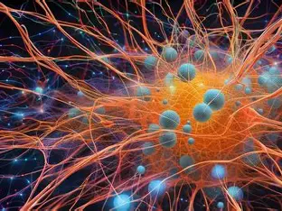

Les réseaux de neurones sont des modèles inspirés du fonctionnement du cerveau humain. Ils sont constitués de neurones artificiels interconnectés qui traitent l’information.
Ils sont utilisés dans le deep learning pour la reconnaissance faciale, la traduction automatique et les voitures autonomes.